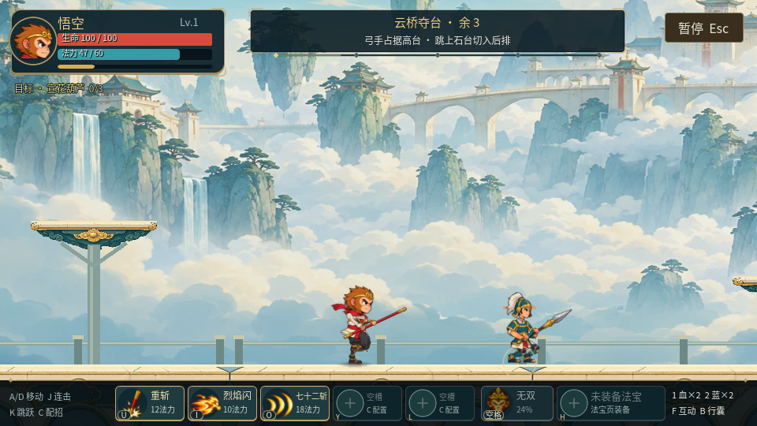
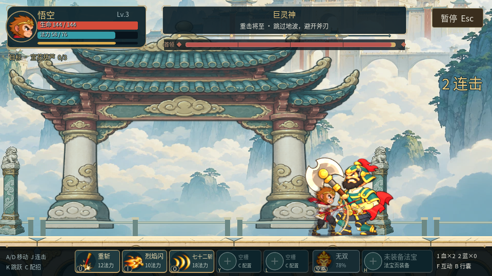
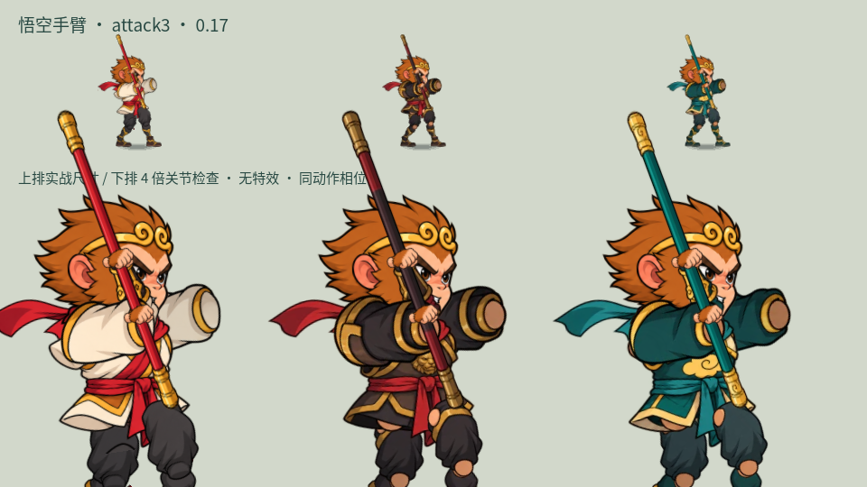
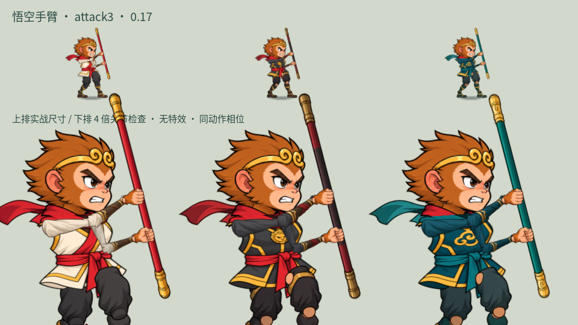
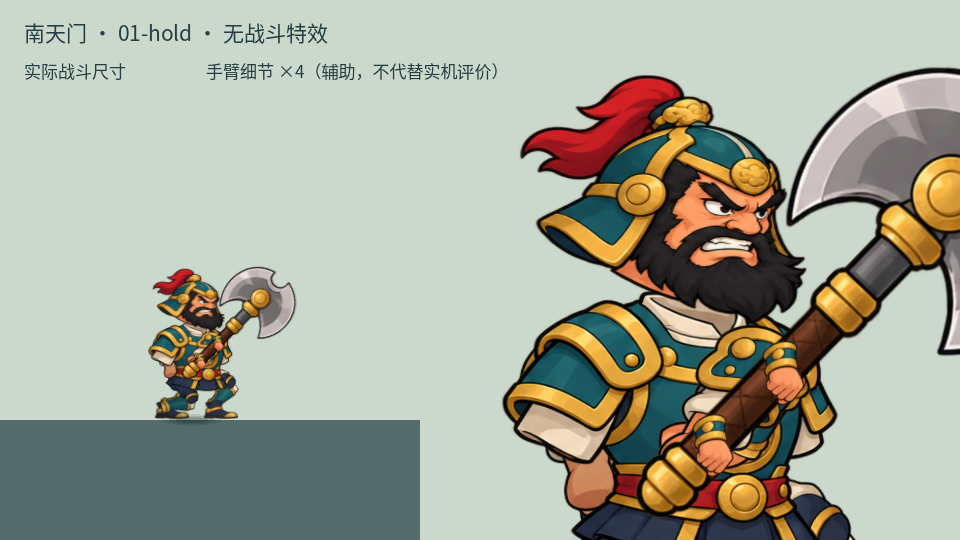
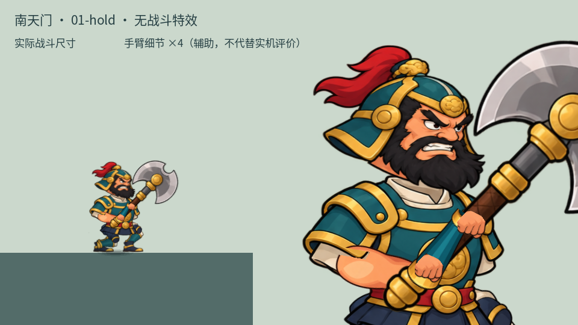

悟空传 / 南天门 / R10
肩肘连起来，双手握稳兵器
重新分开悟空的衣身和衣袖，修正前后手臂比例、手腕与棒身接触。巨灵神也调整了肩口、肘弯和握斧姿势，去掉多余的护腕与肉色端面。
固定入口继续保留独立试玩进度，可自由选关。伤害、判定、命中时刻和存档规则保持。
回到实际战斗


南天门支撑结构和玉柱降低了纹理干扰；临时战斗消息移到血条下方，短暂停留后淡出。
同一动作相位的前后对照

R9：固定袖口与活动手臂叠在一起
R10：衣身独立，握点移出脸部
R9：腕部与斧柄接触、前后肘方向有误
R10：肩口、前臂、拳头按持斧方向衔接每张包含实际尺寸与放大细节；放大行用于辅助检查接缝。
无特效动作检查
9秒原生控制样片：三套衣装、跑步、前翻与二跳、空中接招、受击、三连及收棒。跳跃是视觉翻身，未增加无敌或位移能力。
巨灵神与三类守军的姿势检查，含左右方向与连续落斧、回收；固定姿态段用于比较接缝，并非自然战斗节奏。
主路、隐院与巨灵神
自动按键完成真实关卡，未额外授予位置、生命、法力、装备或无敌。固定帧录像用于检查连续画面与流程，其时长不是新玩家通关时长，也不证明浏览器帧率。
已完成原生画面复看、动作与战斗回归、发布资源核验。当前 Work 设置关闭浏览器自动操作，本轮浏览器键鼠、刷新与帧率仍待实际试玩。玩家对造型和手感的评价继续独立记录。新部件由内置 image_gen 生成，来源和提示词保存在工程。